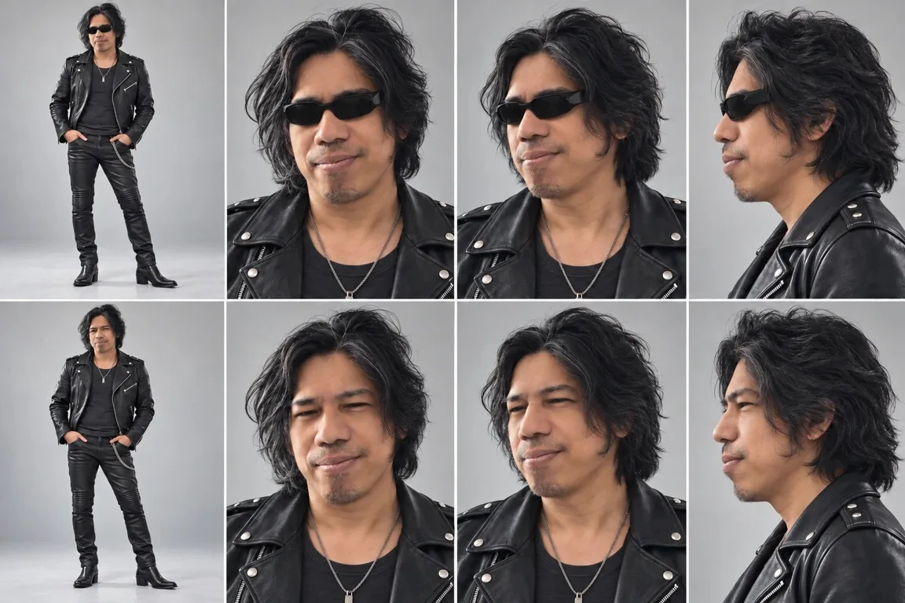
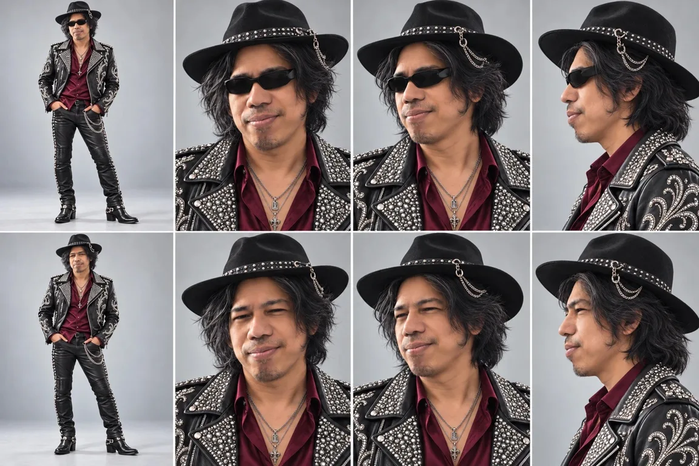
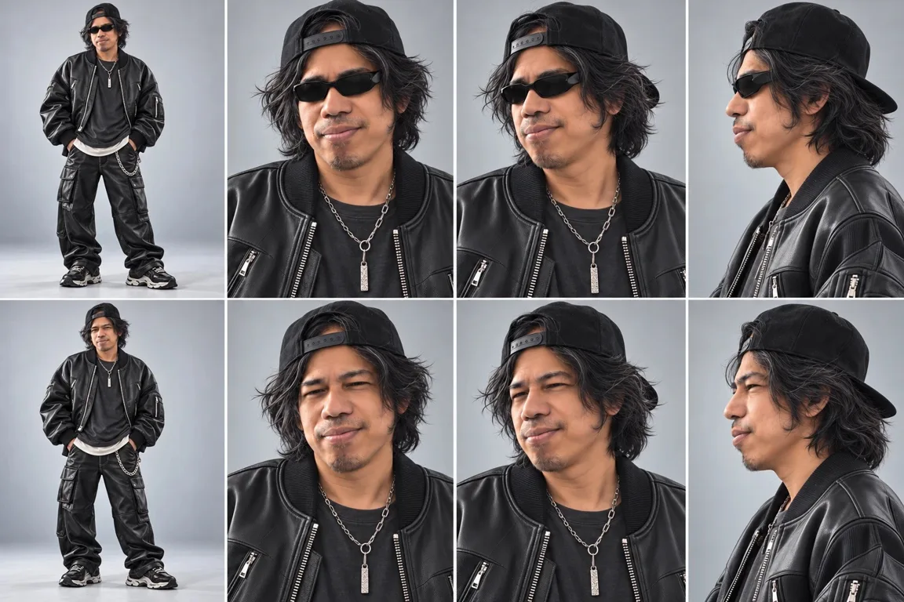
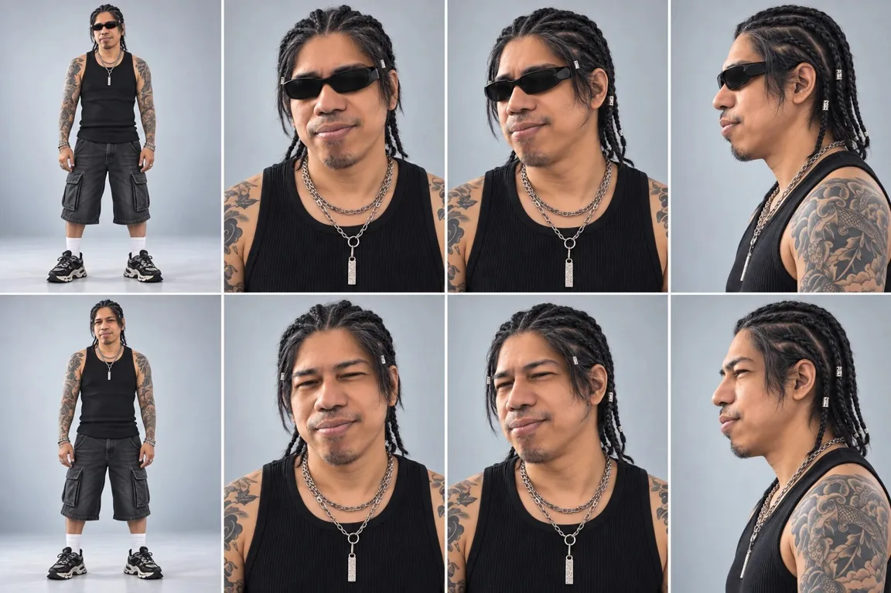
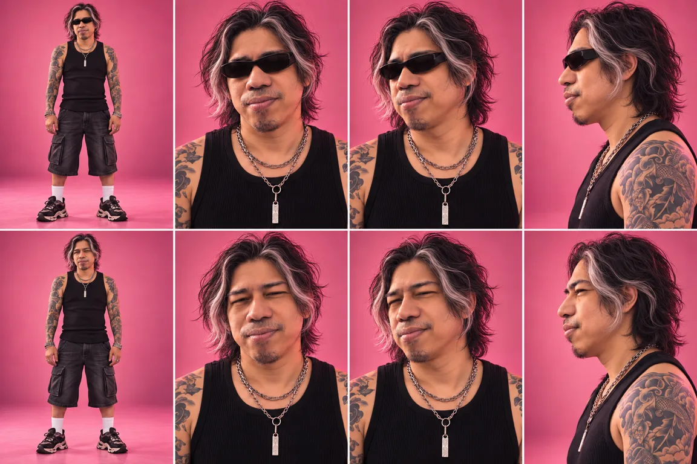

Character select
Step one: who's actually walking into this scene? I held auditions. All of them were me.

TOO MUCHROCK STAR
TOO COWBOYTHE HAT
CLOSER…STREET CAP
NAHBRAIDSFIRST RUN · THE ROCK STAR LOOK, ACTUALLY IN THE SCENE
We started with rock star
Leather everything, glasses, maximum flair. It worked, and that was the problem: it felt like a costume. Then a studded hat went full cowboy. Tokyo street style with a backwards cap got closer. Braids? I tried them. Nah.
Where we landed: my own loose black hair with silver streaks, sunglasses, a tank top, tattoos and layered chains. Something I'd actually (almost) wear.

THE LOOK THE FACE
THE FACEThe pink-studio character sheet locks the costume and hair (with and without glasses, because the glasses come off in some shots). My real portrait sits next to it so the styling can go wild while the face stays… actually mine.